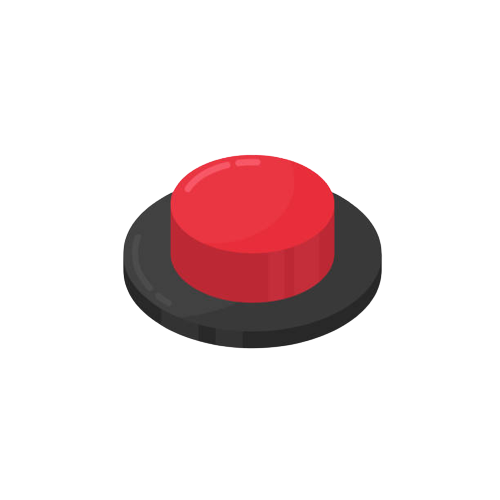

<ion-content noscroll>
  <!-- ******************************* BOTON DESACTIVADO *******************************-->
  <div *ngIf="!alarmActivated" style="width: 100%; height: 100%">
    <!-- ******************************* LOGOUT *******************************-->
    <ion-fab vertical="bottom" horizontal="start" slot="fixed">
      <ion-fab-button id="out-loading" (click)="logoutUser()"><ion-icon name="exit-outline" ></ion-icon></ion-fab-button>
    </ion-fab>

    <ion-grid style="height: 100%; display: flex; flex-flow: column">
      <ion-row style="flex-grow: 1">
        <ion-col style="height: 100%" class="btn-desactivado" (click)="activateAlarm()">
          
        </ion-col>
      </ion-row>
    </ion-grid>
  </div>

    <!-- ******************************* BOTON ACTIVADO *******************************-->
  <div *ngIf="alarmActivated" style="width: 100%; height: 100%">
    <ion-grid style="height: 100%; display: flex; flex-flow: column">
      <ion-row style="flex-grow: 1; height: 100%; width: 100%; margin-bottom: 0px; padding-bottom: 0px;">
        <ion-col style="height: 100%" class="btn-activado" (click)="verificarClave()">
          
        </ion-col>
      </ion-row>
    </ion-grid>
  </div>

</ion-content>